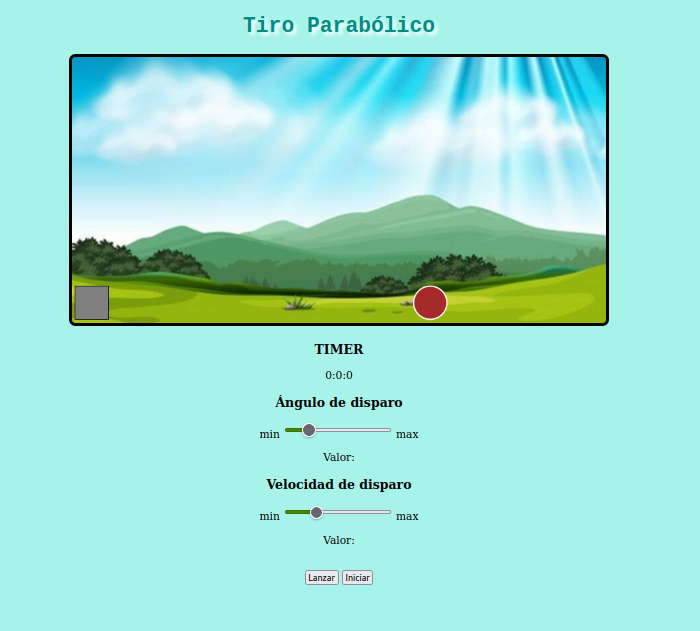
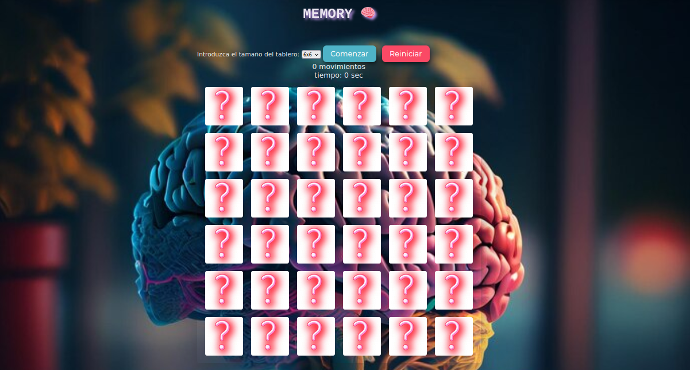

Índice de Prácticas


CSAAI.
Práctica 1: CV
El objetivo de esta práctica es desarrollar un CV utilizando HTML y CSS.
- El CV se adapta a dispositivos móviles
- Compuesto por:
- Una página principal index.html
- Una página about.html
Práctica 2: ¡BOOM!
El objetivo de la práctica 2 es utilizar lo que sabemos sobre javascript para programar un juego sencillo.
¡BOOM!üí£
Consiste en adivinar la clave secreta de cuatro números lo más rápido posible.
Para desarrollar este juego era necesario implementar los siguientes componentes:
- Un espacio para mostrar la clave secreta compuesta por 4 números.
- Un espacio para mostrar el contador.
- Botones con los dígitos del 0 al 9.
- Botones Start, Stop y Reset.
Práctica 3:
El objetivo de la práctica 3 es utilizar lo que sabemos sobre javascript para programar un Tiro Parabólico.
Consiste en lanzar un proyectil describiendo un movimiento parabólico para acertar a un objetivo.
Para desarrollar este juego se implementan los siguientes componentes:
- Un Campo de tiro para el proyectil y el objetivo.
- Un display con el contador de tiempo para cronometrar el tiempo de vuelo del proyectil.
- Un display para mostrar el resultado del lanzamiento.
- Un deslizador para configurar el ángulo de salida del proyectil.
- Un deslizador para configurar la velocidad de disparo del proyectil.
- Un botón de disparo para lanzar el proyectil.
- Un botón de inicio para reiniciar el juego.
Práctica 4:
En esta cuarta práctica, vamos a ejercitar nuestra memoria ü߆ !!!
➸ Desarrollando el Juego Memory
Mostraremos un tablero de tarjetas, cada una de las tarjetas se puede voltear y emparejar.
Si la pareja es correcta...
TENEMOS UN MATCH!! üíû
Las cartas se seguirán mostrando. Pero si no es una combinación correcta, se vuelven a ocultar.
El juego continúa hasta encontrar todas las parejas o reiniciar.
Para desarrollar este juego se necesitan los siguientes elementos:
- Botón para poner en marcha el juego.
- Botón de reinicio del juego.
- Un selector de posibles dimensiones del tablero con valores 2, 4, 6.
- Un display que mostrará el número de movimientos total que hemos hecho, y el tiempo que ha pasado desde que ha empezado la partida.
- Un tablero de tarjetas que puede tener las dimensiones 2, 4 o 6.
Práctica 5:

Senserit mediocrem vis ex, et dicunt deleniti gubergren mei. Mel id clita mollis repudiare. Sed ad nostro delicatissimi, postea pertinax est an. Adhuc sensibus percipitur sed te, eirmod tritani debitis nec ea. Cu vis quis gubergren.
Ver la práctica